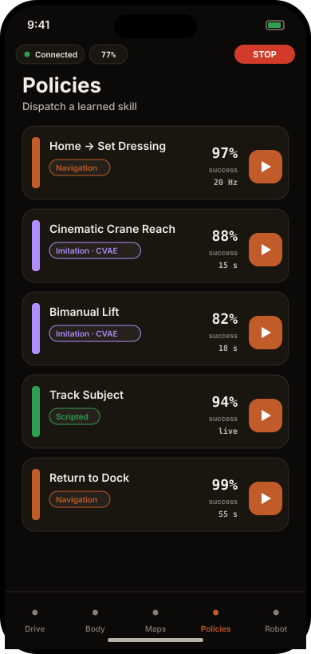

The iPhone app is the lightweight companion — drive, pose, plan, and run policies one-handed, with a live 3D twin and the camera feeds. It auto-discovers MABEL and falls back to an on-device simulator. Every screen below is a real capture from the running app.
Rotate to landscape for the cockpit: a left stick translates, a right stick turns and lifts, over live head and wrist camera feeds — with a speed governor and an always-present STOP.
The sticks run through the same swerve IK and tip-over envelope as every other path, so it stays drone-simple up top and robot-safe underneath.
The status bar shows the live link, battery, and speed; the app auto-connects and otherwise drives an on-device Demo simulator — live with nothing plugged in.
The Body tab renders a real-time 3D twin — same joint definitions as the web viewer and MuJoCo. Drag a wrist under Gravity Comp, switch to Compliance or Joint Control, set grip, or reset to home — the whole-body controller coordinates the rest.
On a real SLAM reconstruction, tap to drop a goal; the app runs an A* global plan around the obstacles, then a pure-pursuit controller tracks the swerve trajectory and drives it.
Real capture · tap a goal → A* plan → pure-pursuit drive

The library lists learned and scripted skills — CVAE visuomotor policies, navigation routines, and scripted behaviours — each with its kind, control rate, and an offline-eval success rate. Tap ▶ to dispatch. See Learning for how they're trained.